Questionário
Introdução
Questionário é uma técnica inflexível, pois é uma das técnicas que pode abranger um grande número de pessoas é o questionário. O seu uso é essencial quando se deseja obter informações de inúmeras pessoas. Além disso, justifica-se a sua aplicabilidade quando há indisponibilidade física, dispersão das pessoas envolvidas no projeto ou, até mesmo, quando há necessidade de um levantamento estatístico das pessoas que utilizaram o sistema.
Perguntas
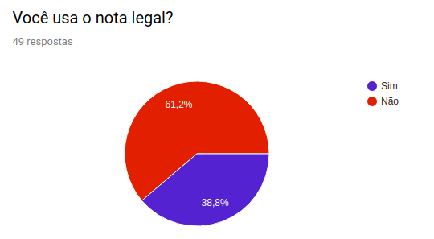
Respostas de pessoas que usam o notal legal
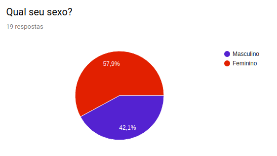
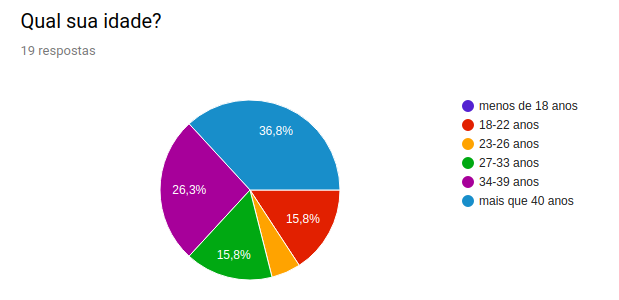
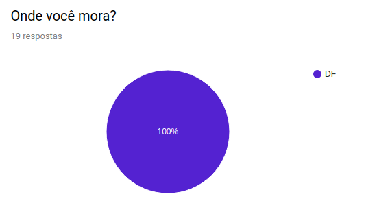
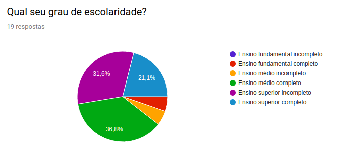
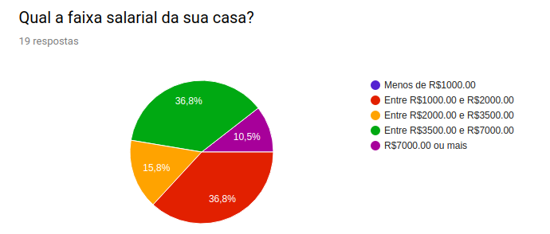
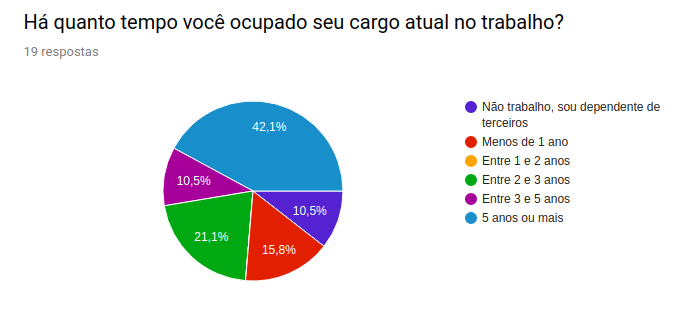
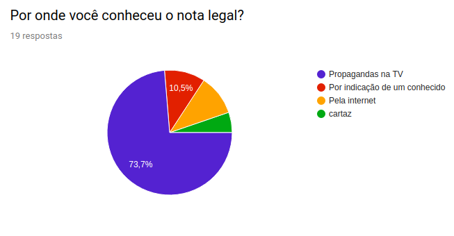
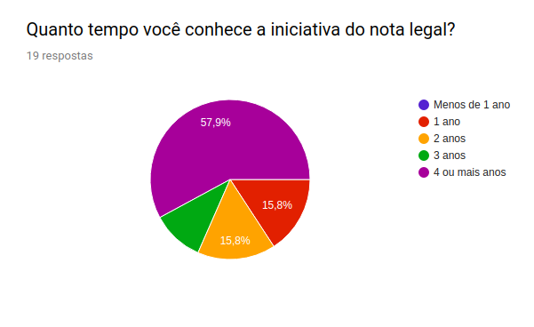
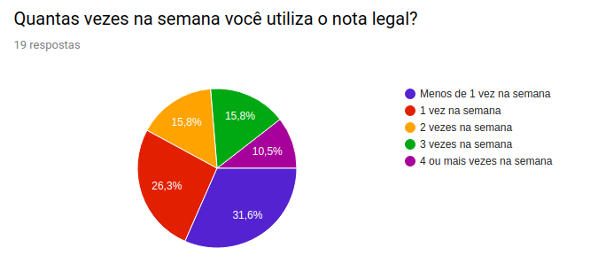

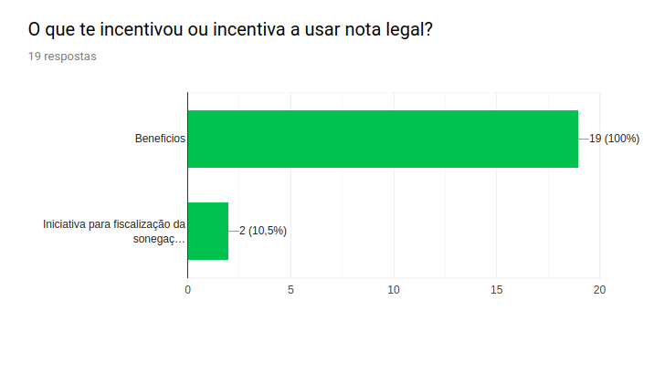
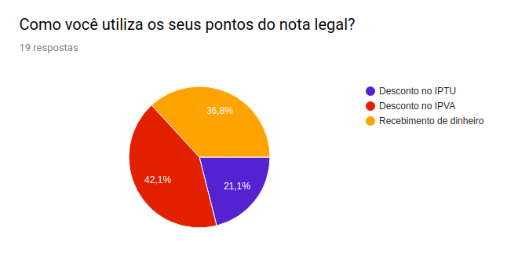
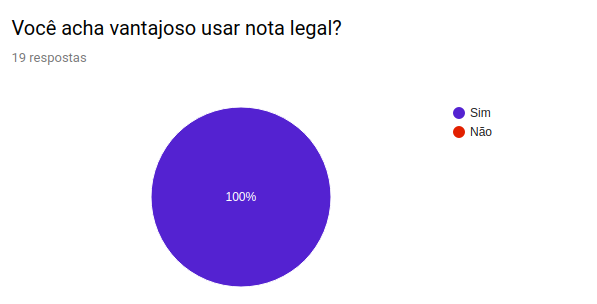
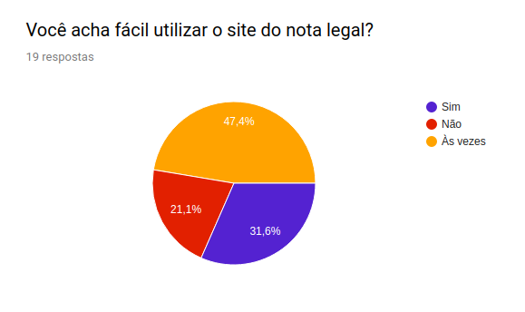
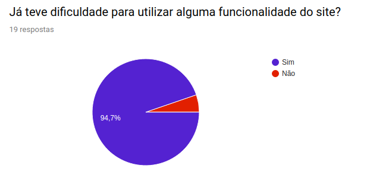
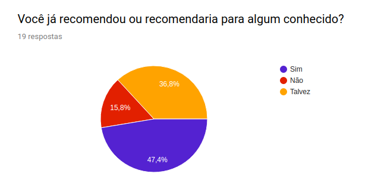
Respostas de pessoas que não usam o nota legal
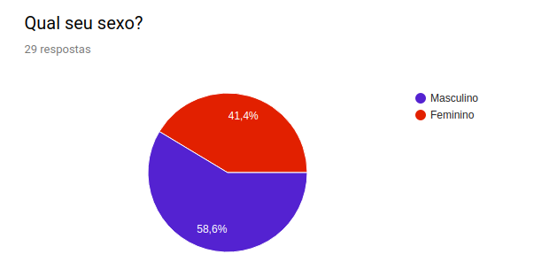
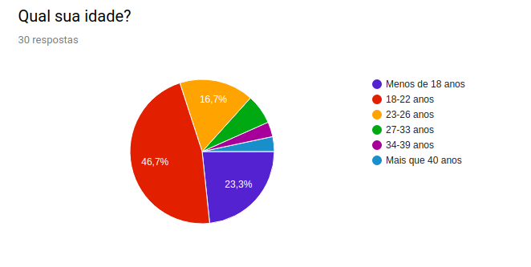
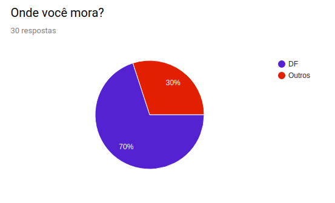
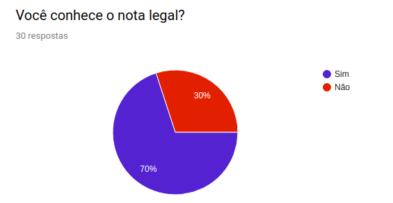
Considerações
A partir dos dados obtidos através do questionário, é possível tirar algumas conclusões. Grande parte dos usuários que responderam o questionário possuem mais de 40 anos e apenas a minoria possuem menos de 22 anos, ou seja, 75% tem mais de 22 anos. Já as pessoas que não utilizam, quase a metade tem entre 18 - 22 anos e apenas menor parte tem mais de 40 anos. Podendo concluir que quanto maior o faixa etária, maior o número de usuários Há um equilibrio entre sexos que utilizam o notal legal, mais de 80% tem pelo menos ensino medio completo. Mais de 60% ganham mais de R$2000. 1/3 dos usuários utilizam o notal legal há mais de 4 anos.
| Data | Versão | Descrição | Autor(es) |
|---|---|---|---|
| 10/10/2019 | 1.0 | Criado o documento | João Pedro soares, lucas alexandre |
| 11/10/2019 | 1.1 | Adicionado as considerações | João Pedro, Lucas Alexandre |
| 13/10/2019 | 1.2 | Atulizado o questinário | Lucas Alexandre |